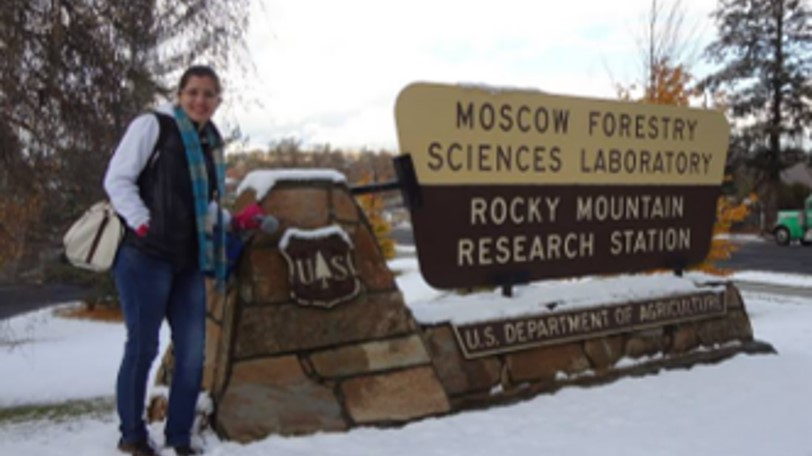
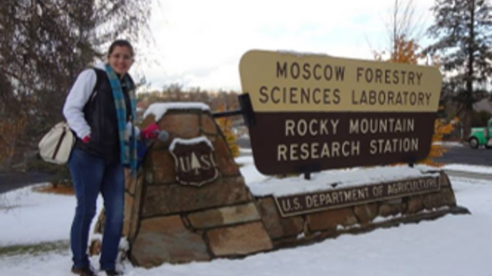
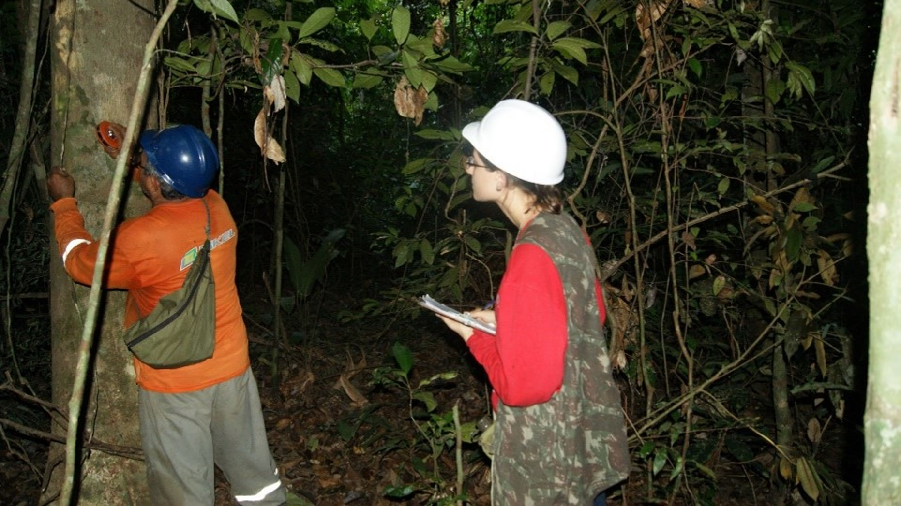
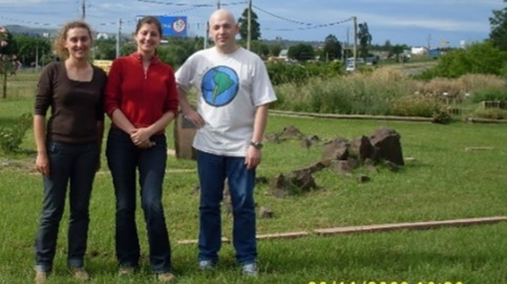
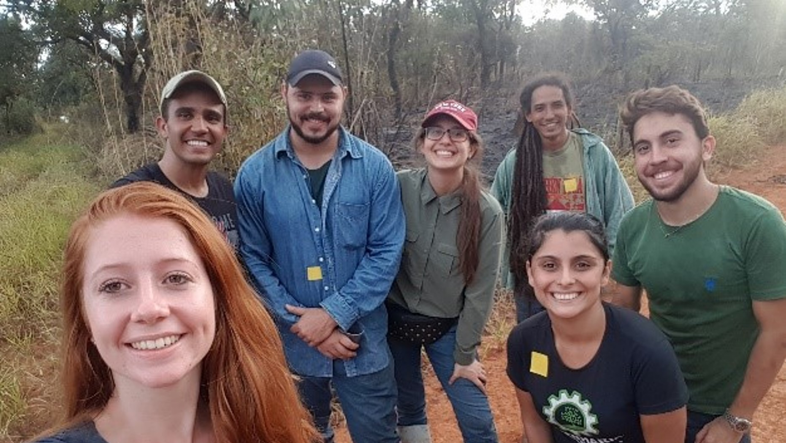
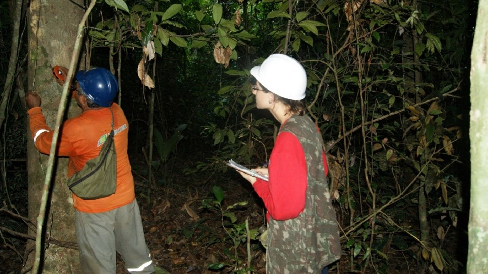
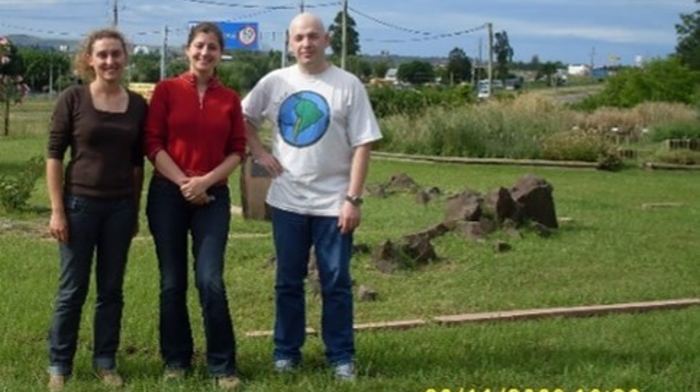
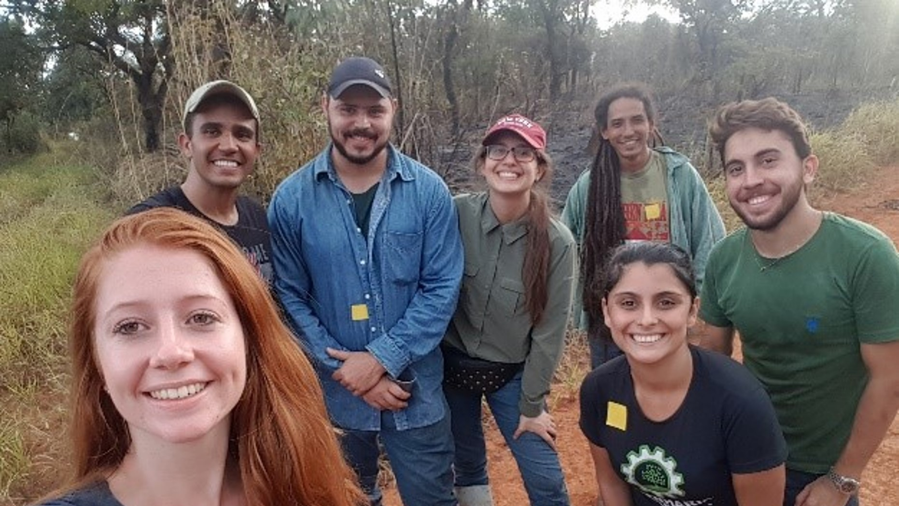

Open-source tools
My research involves developing and maintaining a suite of cutting-edge tools designed to advance quantitative forest ecology, remote sensing data processing, and environmental analysis. Leveraging the power of R programming, interactive Shiny applications, and web-based mapping platforms, I provide scientists, resource managers, and educators with accessible, open-source solutions.
R Package Tools:
My R packages enable rigorous processing, visualization, and analysis of LiDAR, satellite, and terrestrial laser scanning data. These tools facilitate tasks such as tropical forest gap analysis, vegetation structure modeling, and post-disturbance damage classification using deep learning techniques.
Shiny Application
The Treetop Shiny app offers an intuitive interface to extract detailed forest information from LiDAR datasets, enabling researchers and students to interactively explore forest structure without requiring advanced programming skills.
Web-based Mapping Platform
RapidFEM4D is an innovative online tool that maps and assesses the impact of extreme weather events like Hurricane Ian on forest ecosystems, providing stakeholders with valuable insights into forest recovery and management.
Together, these tools support a wide range of applications—from ecological research and forest monitoring to community outreach and education—embodying my commitment to open science and environmental stewardship.
List of R Package Tools
1) ForestGapR
An R Package for Airborne Laser Scanning-derived Tropical Forest Gaps Analysis.
3) rLiDAR
An R Package for LiDAR Data Processing and Visualization.
4) rGEDI
An R Package for NASA's Global Ecosystem Dynamics Investigation (GEDI) Data Visualizing and Processing.

5) rTLsDeep
An R Package for post-hurricane damage severity classification at the individual tree level using terrestrial laser scanning and deep learning.
6) ICESat2VegR
An R Package for NASA's Ice, Cloud, and Elevation Satellite (ICESat-2) Data Processing and Visualization for Land and Vegetation Applications.

List of Shiny App
2) Treetop
A Shiny-based Application for Extracting Forest Information from LiDAR data.
List of Web-based Mapping Tools
7) RapidFEM4D
A web-based mapping platform for assessing the impact of Hurricane Ian and recovery of forest ecosystems in Florida.


 

 




